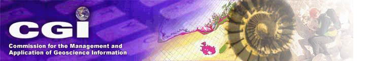

CGI Home
|
GeoSciML Home
|
GeoSciML Wiki
|
EarthResourceML
|
Vocabularies
GeoSciML and GeoSciML-Lite (previously GeoSciML-Portrayal)
Schemas, schematrons, and XML examples
Current version of GeoSciML (includes GeoSciML-Lite)
GeoSciML v 4.1
(2017)
Previous versions
GeoSciML v3 and 4.0
GeoSciML v2
GeoSciML-Portrayal
ZIP file of all current and previous GeoSciML and GeoSciML-Portrayal schemas